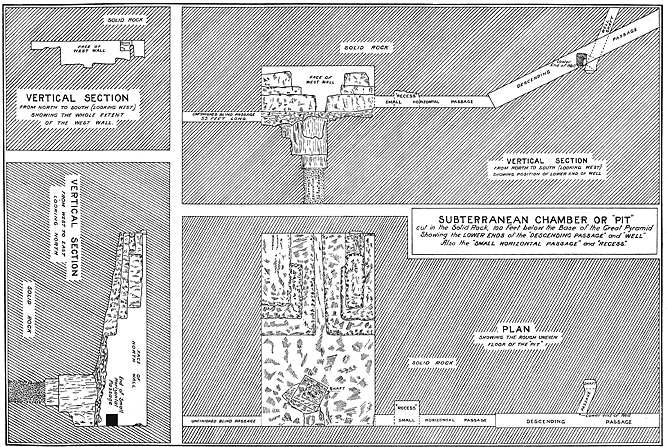
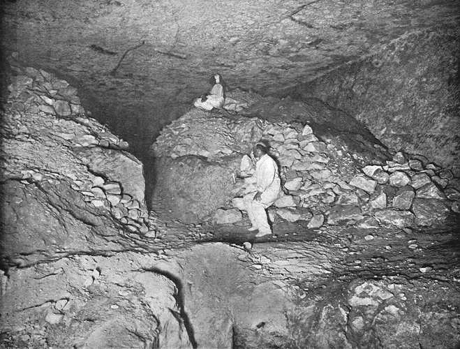
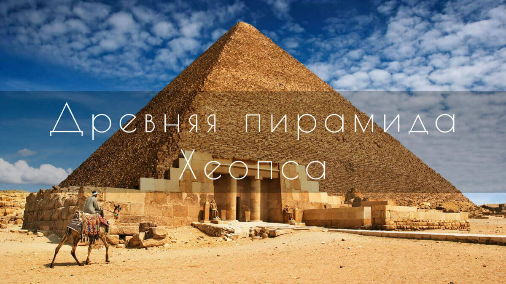
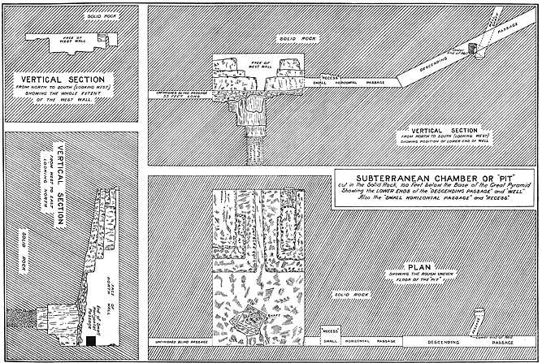
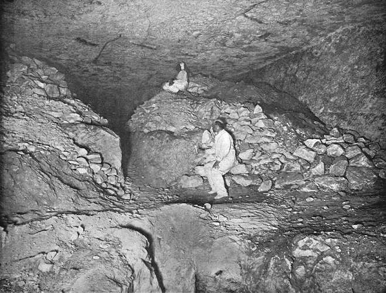
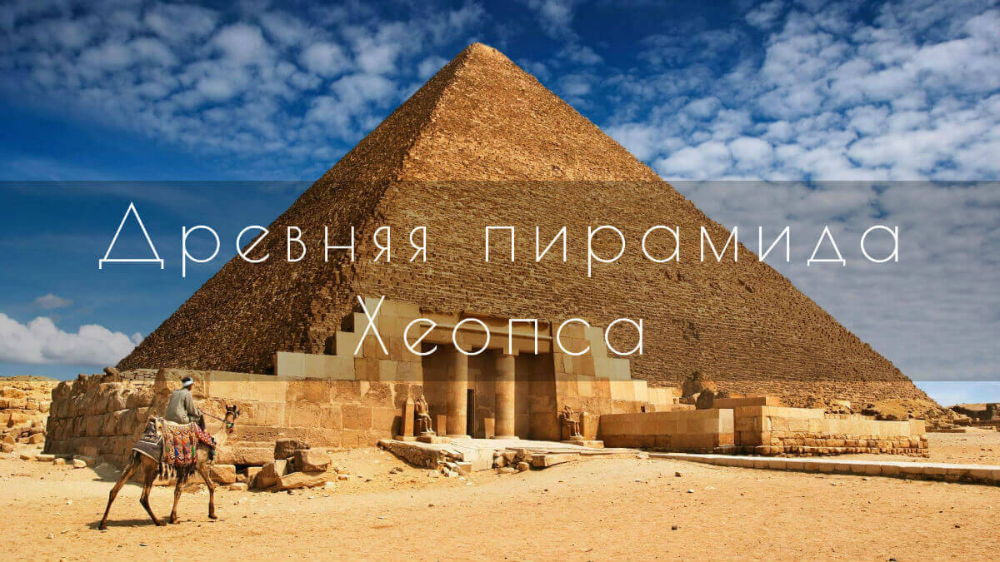

Пирамида Хеопса:Великая пирамида Гизы — крупнейшая из египетских пирамид, памятник архитектурного искусства Древнего Египта; единственное из «Семи чудес света», сохранившееся до наших дней, и самое древнее из них: её возраст оценивается примерно в 4500 лет. Расположена на плато Гиза в окрестностях египетской столицы и дельты Нила; самая северная из трёх больших пирамид плато, носящих имена трёх фараонов Древнего царства, предполагаемых заказчиков строительства, — Хеопса, Хефрена (Хафры) и Микерина (Менкауры). Эти пирамиды были сооружены в окрестностях городов Мемфиса (столицы Древнего царства) и Гелиополя за тысячелетия до основания Каира[1]. На протяжении более трёх тысяч лет (до возведения собора в Линкольне, Англия, ок. 1300 года) Великая пирамида являлась самой высокой постройкой на Земле. С 1979 года, как и многие другие пирамиды комплекса «Мемфис и его некрополи — район пирамид от Гизы до Дахшура», является частью Всемирного наследия ЮНЕСКО.
Возраст пирамиды:Архитектором Великой пирамиды считается Хемиун, визирь и племянник Хеопса. Он также носил титул «Управляющий всеми стройками фараона». Предполагается, что строительство, продолжавшееся двадцать лет (время правления Хеопса), закончилось около 2540 года до н. э.[2]. Существующие методы датирования времени начала строительства пирамиды делятся на исторические, астрономические и радиоуглеродные. В Египте официально установлена (2009) и празднуется дата начала строительства пирамиды Хеопса — 23 августа 2560 года до н. э. Такая дата получена с использованием астрономического метода Кейт Спенс (университет в Кембридже[3]). Однако этот метод и полученные с его помощью даты подвергались критике многих египтологов. Даты согласно другим методам датирования: 2720 до н. э. (Стивен Хак, университет Небраска), 2577 до н. э. (Джуан Антонио Бельмонте, университет астрофизики в Канарисе) и 2708 до н. э. (Поллукс, университет Баумана). Радиоуглеродный метод даёт диапазон от 2680 до н. э. до 2850 до н. э. Поэтому установленному «дню рождения» пирамиды нет никаких серьёзных подтверждений, так как египтологи не могут сойтись в том, в каком именно году началось строительство[4].
Первые упоминания пирамиды:Загадкой остаётся полное отсутствие упоминания пирамиды в египетских папирусах. Первые описания встречаются у греческого историка Геродота (V век до н. э.) и в древних арабских легендах[источник не указан 887 дней]. Геродот сообщал[5] (как минимум, через 2 тысячелетия после появления Великой пирамиды), что она была возведена при фараоне-деспоте по имени Хеопс (греч. Koufou), правившем 50 лет, что на строительстве было занято 100 тыс. чел. на протяжении двадцати лет, и что пирамида — в честь Хеопса, но не его могила. Настоящая могила — захоронение возле пирамиды. Геродот привёл ошибочные сведения о размерах пирамиды, а также упомянул о средней пирамиде плато Гиза, что она была возведена дочерью Хеопса, которая продавала себя, и что каждый строительный камень соответствовал мужчине, которому она отдавалась. По Геродоту, если "поднять камень, открывался длинный извилистый путь к могиле", без конкретизации, о какой именно пирамиде идет речь; однако пирамиды плато Гиза "извилистых" путей к усыпальнице на момент посещения их Геродотом не имели; наоборот, Нисходящий проход БП Хеопса отличает тщательная прямолинейность. А других помещений в БП на тот момент известно не было.
Внешний вид:Пирамида называется «Ахет-Хуфу» — «Горизонт Хуфу» (или более точно «Относящийся к небосклону — (это) Хуфу»). Состоит из блоков известняка и гранита. Она была построена на естественном известняковом холме. После того, как пирамида лишилась нескольких слоёв облицовки, этот холм частично просматривается на восточной, северной и южной сторонах пирамиды. Несмотря на то, что пирамида Хеопса — самая высокая и самая объёмная из всех египетских пирамид, всё же фараон Снофру построил пирамиды в Мейдуме и в Дахшуре (Ломаная пирамида и Розовая пирамида), общая масса которых оценивается в 8,4 млн тонн. Первоначально пирамида была облицована более твёрдым, чем основные блоки, белым известняком. Верх пирамиды венчал позолоченный камень — пирамидион (др. егип. — «Бенбен»). Облицовка сияла на солнце персиковым цветом, словно «сияющее чудо, которому сам бог Солнца Ра, казалось, отдал все свои лучи». В 1168 году арабы разграбили и сожгли Каир. Жители Каира сняли облицовку с пирамиды для того, чтобы построить новые дома.
Вогнутость сторон:Когда солнце движется вокруг пирамиды, можно заметить неровность — вогнутость центральной части стен. Возможно, причиной этого является эрозия или повреждения в результате падения каменной облицовки. Возможно также, что это было специально сделано ещё во время строительства. Как замечают Вито Мараджольо (Vito Maragioglio) и Челесте Ринальди (Celeste Rinaldi), пирамида Микерина уже не имеет такой вогнутости сторон. I.E.S. Edwards объясняет эту особенность тем, что центральная часть каждой стороны со временем просто вдавилась внутрь от большой массы каменных блоков.
Угол наклона:Точно определить первоначальные параметры пирамиды не представляется возможным, поскольку её края и поверхности в настоящее время большей частью разобраны и уничтожены. Это затрудняет вычисление точного угла наклона. Кроме того, её симметрия сама по себе не является идеальной, так что при разных измерениях наблюдаются отклонения в цифрах. В литературе по египтологии к одинаковым результатам в измерениях пришли Петер Яноши, Марк Ленер, Мирослав Вернер, Захи Хавасс, Альберто Сильотти, которые считают что длина сторон может составлять от 230,33 до 230,37 м. Зная длину стороны и угол при основании они вычислили высоту пирамиды — с 146,59 до 146,60 м. Наклон пирамиды составляет 51° 50', что соответствует секеду (древнеегипетской единице измерения наклона, которая определяется как отношение половины основания к высоте) в 5 1/2 ладоней. С учётом того, что в одном локте (кубите) 7 ладоней, получается, что при таком выбранном секеде удвоенное отношение основания к высоте равняется 22/7, хорошо известное с древности приближение числа пи. Которое, судя по всему, получилось случайно, так как у других пирамид были выбраны другие значения для секеда[6]. Геометрическое изучение вентиляционных туннелей Исследование геометрии Великой пирамиды не даёт однозначного ответа на вопрос о первоначальных пропорциях этого строения. Допускается, что египтяне имели представление о «Золотом сечении» и числе пи, которые были отражены в пропорциях пирамиды: так, соотношение высоты к основанию равняется 14/22 (высота = 280 локтей, а основание = 440 локтей, 280/440 = 14/22). Впервые в мировой истории эти величины были использованы при строительстве пирамиды в Мейдуме. Однако для пирамид поздних эпох данные пропорции больше нигде не применялись, как, например некоторые имеют соотношения высоты к основанию, как 6/5 (Розовая пирамида), 4/3 (Пирамида Хефрена) или 7/5 (Ломаная пирамида). Некоторые из теорий считают пирамиду астрономической обсерваторией. Утверждается, что коридоры пирамиды точно указывают в сторону «полярной звезды» того времени — Тубан, вентиляционные коридоры южной стороны — на звезду Сириус, а с северной стороны — на звезду Альнитак[7].
Внутренняя структура:Вход в пирамиду находится на высоте 15,63 метров на северной стороне. Вход образуют каменные плиты, уложенные в виде арки, но это структура, которая была внутри пирамиды — истинный вход не сохранился. Истинный вход в пирамиду, вероятнее всего, был закрыт каменной пробкой. Описание такой пробки можно найти у Страбона, также облик её можно представить, исходя из сохранившейся плиты, закрывавшей верхний вход в Ломаную пирамиду Снофру, отца Хеопса. Сегодня туристы попадают внутрь пирамиды через 17-метровый пролом, который сделал в 820 году багдадский халиф Абдуллах аль-Мамун на 10 метров ниже. Он надеялся найти там несметные сокровища фараона, но обнаружил там только слой пыли толщиной в пол-локтя. Внутри пирамиды Хеопса находятся три погребальные камеры, расположенные одна над другой.
Погребальная «яма»:Нисходящий коридор длиной в 105 м, идущий под наклоном 26° 26’46, приводит к горизонтальному коридору длиной 8,9 м, ведущему к камере 5. Расположенная ниже уровня земли в скальном известняковом основании, она осталась незавершённой. Размеры камеры 14×8,1 м, она вытянута с востока на запад. Высота достигает 3,5 м, потолок имеет крупную трещину. У южной стены камеры имеется колодец глубиной около 3 м, от которого в южном направлении на 16 м тянется узкий лаз (0,7×0,7 м в сечении), заканчивающийся тупиком. Инженеры Джон Перринг (John Shae Perring) и Говард Уайз (Richard William Howard Vyse) в начале XIX века расчистили в камере пол и вырыли колодец глубиной 11,6 м, в котором они надеялись обнаружить скрытую погребальную комнату. Они основывались на свидетельствах Геродота, утверждавшего, что тело Хеопса находится на острове, окружённом каналом в скрытой подземной камере. Их раскопки ни к чему не привели. Поздние исследования показали, что камера была брошена незавершённой, а погребальные камеры было решено устроить в центре самой пирамиды.
Восходящий коридор и Палаты царицы:От первой трети нисходящего прохода (через 18 м от главного входа) вверх под тем же углом 26,5° идёт на юг восходящий проход (6) длиной около 40 м, оканчивающийся в нижней части Большой галереи (9). В своём начале восходящий проход содержит 3 большие кубические гранитные «пробки», которые снаружи, из нисходящего прохода, были замаскированы блоком известняка, выпавшим при работах аль-Мамуна. Таким образом, первые 3000 лет от постройки пирамиды, (в том числе, в эпоху её активных посещений в Античности) считалось, что в Большой пирамиде нет никаких иных помещений, кроме нисходящего прохода и подземной камеры. Аль-Мамуну не удалось пробить эти пробки и он просто выдолбил в более мягком известняке обход справа от них. Этот проход используется до сих пор. По поводу пробок существует две основные теории, одна из них основывается на том, что восходящий проход имеет пробки, установленные в начале строительства и, таким образом, этот проход был запечатан ими с самого начала. Вторая утверждает, что имеющееся ныне сужение стен вызвано землетрясением, а пробки находились до этого в пределах Большой галереи и были использованы для запечатывания прохода только после похорон фараона. Важной загадкой этого участка восходящего прохода является то, что в месте, где сейчас расположены пробки, в полноразмерной, хотя и укороченной модели ходов пирамиды — так называемые коридорах испытаний к северу от Большой пирамиды, — имеется стык не двух, а сразу трёх коридоров, третьим из которых является вертикальный туннель. Поскольку пробки до сих пор никто не смог сдвинуть с места, вопрос, есть ли над ними вертикальный лаз, остаётся открытым. В середине восходящего прохода конструкция стен имеет особенность: в трёх местах установлены так называемые «рамочные камни» — то есть квадратный по всей длине проход пронзает насквозь три монолита. Назначение этих камней неизвестно. В районе рамочных камней стены прохода имеют несколько небольших ниш. Во вторую погребальную камеру от нижней части Большой галереи ведёт в южном направлении горизонтальный коридор длиной 35 м и высотой 1,75 м. Стены этого горизонтального коридора сложены из очень крупных блоков известняка, на которые нанесены фальшивые «швы», имитирующие кладку из блоков меньшего размера. За западной стеной прохода имеются полости, заполненные песком. Вторую камеру традиционно называют «Камерой царицы», хотя по обряду жён фараонов хоронили в отдельных маленьких пирамидах. «Камера царицы», облицованная известняком, имеет 5,74 метра с востока на запад и 5,23 метра с севера на юг; её максимальная высота 6,22 метра. В восточной стене камеры имеется высокая ниша.
Грот, Большая галерея и Палаты Фараона:Ещё одно ответвление от нижней части Большой галереи — узкая почти вертикальная шахта высотой около 60 м, ведущая к нижней части нисходящего прохода. Существует предположение, что она была предназначена для эвакуации рабочих или жрецов, завершавших «запечатывание» основного прохода к «Камере царя». Примерно посередине её находится небольшое, вероятнее всего, естественное расширение — «Грот» (Grotto) неправильной формы, в котором от силы могли бы поместиться несколько человек. Грот (12) расположен на «стыке» каменной кладки пирамиды и небольшого, высотой около 9 метров, холма на известняковом плато, лежащего в основании Большой Пирамиды. Стены Грота частично укреплены древней каменной кладкой, и, поскольку отдельные её камни слишком велики, существует предположение, что Грот существовал на плато Гиза как самостоятельное сооружение ещё задолго до строительства пирамид, а сама эвакуационная шахта строилась с учётом местонахождения Грота. Однако, с учётом того, что шахта именно долбилась в уже уложенной кладке, а не выкладывалась, о чём говорит её неправильное круглое сечение, встаёт вопрос о том, как строителям удалось точно выйти на Грот. Большая галерея продолжает восходящий проход. Её высота 8,53 м, это прямоугольный в сечении, с немного сужающимися кверху (т. н. «ложный свод») стенами, высокий наклонный туннель длиной 46,6 м. Посередине Большой галереи почти по всей длине идёт правильное в сечении квадратное углубление размерами шириной 1 метр и глубиной 60 см, а на обоих боковых выступах имеется 27 пар углублений неясного предназначения. Углубление заканчивается т. н. «Большой ступенькой» — высоким горизонтальным выступом, площадкой 1×2 метра в конце Большой галереи, непосредственно перед лазом в «прихожую» — Предкамеру. Площадка имеет пару аналогичных углублениям рампы, углублений по углам у стены (28-я и последняя пара углублений БГ). Через «прихожую» лаз ведёт в облицованную чёрным гранитом погребальную «Камеру царя», где размещён пустой гранитный саркофаг. Крышка саркофага отсутствует. Вентиляционные шахты имеют устья в «Камере царя» на южной и северной стенах на высоте примерно метра от уровня пола. Устье южной вентшахты сильно повреждено, северная предстает неповрежденной. Пол, потолок, стены камеры не имеют никаких украшений либо отверстий или элементов крепления чего-либо, относящихся к времени строительства пирамиды. Плиты потолка все лопнули вдоль южной стены и не падают внутрь помещения лишь за счет прижима весом вышележащих блоков. Над «Камерой царя» находятся обнаруженные в XIX веке пять разгрузочных полостей общей высотой 17 м, между которыми лежат монолитные гранитные плиты толщиной около 2 м, а выше — двускатное перекрытие из известняка. Считается, что их назначение — распределять вес вышележащих слоёв пирамиды (около миллиона тонн), чтобы защитить от давления «Камеру царя». В этих пустотах обнаружены граффити, оставленные, вероятно, рабочими.
Вентиляционные каналы:От «Камеры царя» и «Камеры царицы» в северном и южном направлениях (сперва горизонтально, затем наклонно вверх) отходят так называемые «вентиляционные» каналы шириной 20—25 см. При этом каналы «Камеры царя», известные ещё с XVII века, сквозные, они открыты и снизу и сверху (на гранях пирамиды), тогда как нижние концы каналов «Камеры царицы» отделяет от поверхности стены около 13 см, они были обнаружены при простукивании в 1872 году. Верхние концы шахт «Камеры царицы» не доходят до поверхности примерно 12 метров, и закрыты каменными «Дверками Гантенбринка», каждая с двумя медными ручками. Медные ручки были опечатаны гипсовыми печатями (не сохранились, но остались следы). В южной вентшахте «дверца» обнаружена в 1993 году с помощью телеуправляемого робота «Упуаут II»; изгиб северной шахты не позволил тогда обнаружить в ней такую же «дверцу» этим роботом. В 2002 году с помощью новой модификации робота в южной «дверце» было пробурено отверстие, но за ней обнаружилась небольшая полость длиной в 18 сантиметров и ещё одна каменная «дверца». Что находится дальше, пока неизвестно. Этот робот подтвердил наличие аналогичной «дверцы» на конце северного канала, но её сверлить не стали. Новый робот в 2010 году смог просунуть в просверленное отверстие в южной «дверце» змеевидную телекамеру и обнаружил, что медные «ручки» с той стороны «дверцы» оформлены в виде аккуратных петель, а на полу «вентиляционной» шахты нанесены отдельные значки красной охрой. В настоящее время наиболее распространена версия, что предназначение «вентиляционных» каналов носило религиозный характер и связано с представлениями египтян о загробном путешествии души. А «дверца» на конце канала — это не что иное, как дверь в загробный мир. Именно поэтому она не выходит на поверхность пирамиды. В то же время, шахты верхней погребальной камеры имеют сквозные выходы наружу и внутрь помещения; неясно, связано ли это с каким-то изменением ритуала; так как наружные несколько метров облицовки пирамиды уничтожены, неясно, были ли «Дверки Гантенбринка» в верхних шахтах. (могли быть в том месте, где шахта не сохранилась). В южной верхней шахте есть т.н. "Ниши Хеопса" - странные расширения и пазы, которые, возможно, и содержали "дверку". В северной верхней никаких "ниш" нет вообще[8].